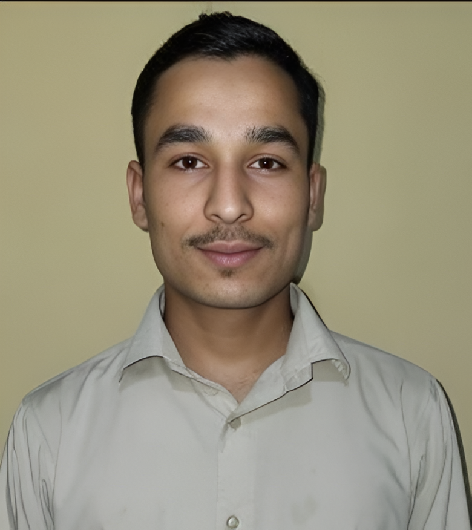

CURRICULUM VITAE
Yashpal Singh
Mob: +91 8560219076
Email: yasharmy98@gmail.com

Objective
Seeking a challenging role in the hospitality sector where I can contribute my skills,
maintain integrity, and support organizational growth.
Work Experience
- Six-month industrial training at Radisson Hotel, Jaipur (July 2019 – Jan 2020).
- 3.5 Years’ experience in Dirty Good Restaurant, New Delhi as F&B ( 1 Years as a Steward and 2.5 Years as a Senior Steward.)
Educational Qualifications
Academic
- 10th – Uttarakhand Board (2013)
- 12th – Uttarakhand Board (2016)
Professional
- 1-Year Diploma in Hotel Management (All Departments) from CAIMS, Uttarakhand (2019)
Personal Details
- Date of Birth: 01-07-1998
- Gender: Male
- Marital Status: Single
- Nationality: Indian
- Languages: English & Hindi
- Father’s Name: Kushal Singh
Hobbies
- Reading
- Traveling
- Volleyball
- Cricket
- Cooking
Declaration